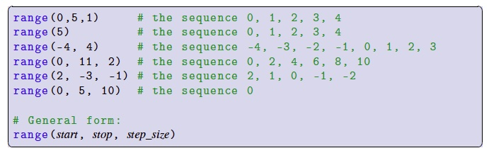
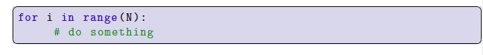
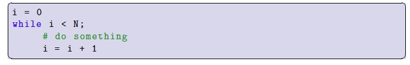

We can use for-loops to create counting loops just like we did with while-loops. To do so, we first need to learn about a new kind of sequence called a range.
A range is a sequence of integers that begins at an integer a (the start), ends before an integer b (the stop), and the difference between each element in the sequence, called the step size, is equal. For example, the range starts at 1, stops at 5 and has a step size of 1 is comprised of the sequence of integers 1, 2, 3, 4. Ranges are created with Python’s built-in range() function. The range function requires two arguments, start and stop, and can optionally accept a third argument for the step size, which, if not given, defaults to 1. You may also provide just a single argument to range; range(x) is equivalent to range(0, x, 1), and is the sequence 0, 1, 2,..., x - 1. Here are some example ranges:

Remember: the value stop is not part of the sequence.
Ranges can be used to write counting for-loops. Here is a for-loop that repeats its block exactly N times:

In the above loop, i refers to the value 0 on the first repetition, 1 on the second repetition, and so on, up to N-1 on the last repetition. It is equivalent to the following while-loop:

For example: